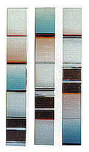

|  |  |  |  |  |
|
 click here to view larger image |
 |
Unfinished acrylic paint, 5 canvases, Velcro, wooden frame 15 x 100 cm 1998 You are looking at 3 pictures of the same painting, because the painting is made of 5 small canvases that attach to a wooden frame via Velcro. The viewer can choose different arrangements ... different patterns, but there is no 'final' version or solution. |